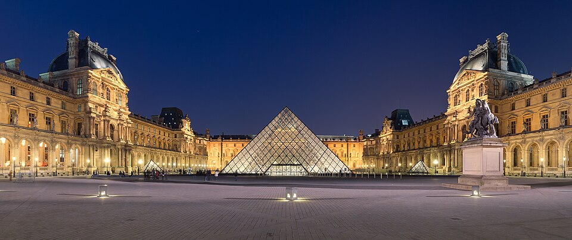
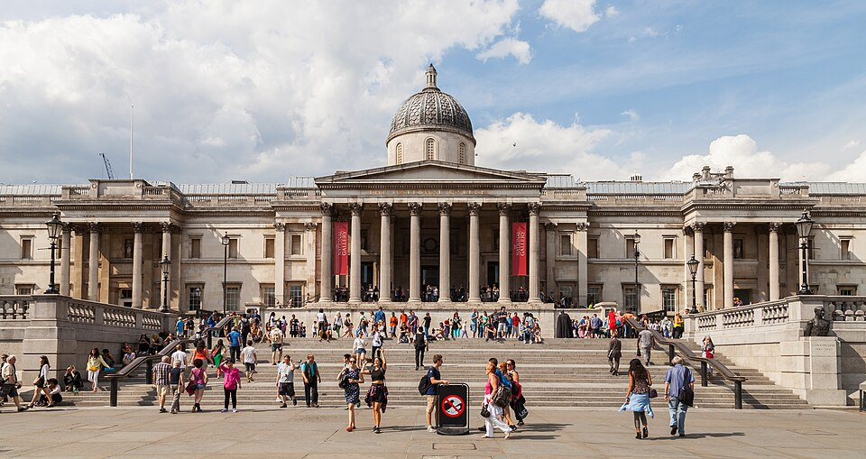
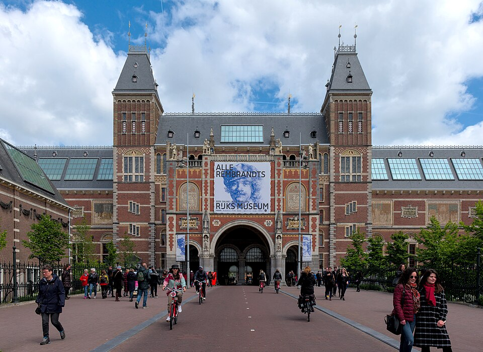

Колыбель мировой культуры — от Лувра до Рейксмузея

Крупнейший и один из самых посещаемых музеев мира. Более 380 000 экспонатов, включая «Мону Лизу» да Винчи, «Венеру Милосскую» и «Нике Самофракийскую». Расположен в бывшей королевской резиденции.
Сайт музея
Одна из ведущих картинных галерей мира с коллекцией более 2300 европейских картин XIII–XX веков. Работы Боттичелли, Да Винчи, Тёрнера и Ван Гога. Бесплатный вход для всех посетителей.
Сайт музея
Национальный музей Нидерландов, основанный в 1800 году. Хранит шедевры Рембрандта, Вермеера и Франса Халса. Более 1 миллиона экспонатов, включая украшения, оружие и предметы декоративно-прикладного искусства.
Сайт музеяФилиал Музея Соломона Гуггенхайма, открывшийся в 1997 году. Здание спроектировано Фрэнком Гери и является шедевром деконструктивизма. Представляет современное и современное искусство со всего мира.
Сайт музея